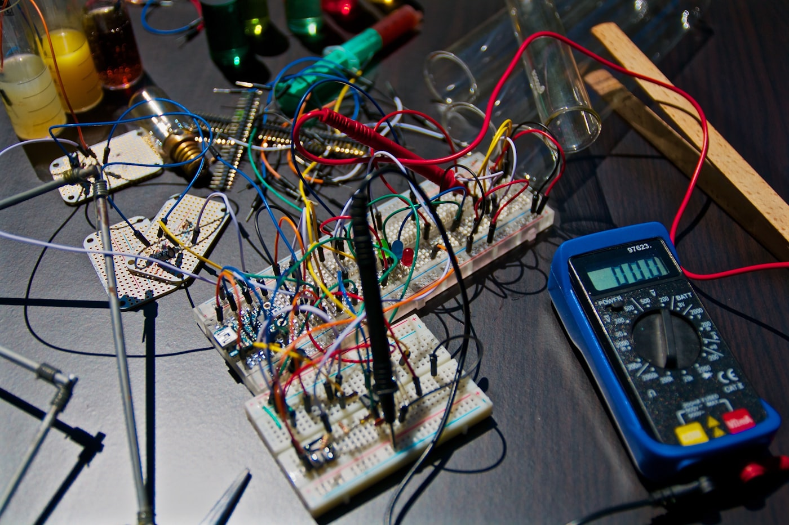

Сучасна інженерна освіта — під ключ і без бюджету громади
Ми привозимо у вашу громаду інженерну школу дронів для підлітків 13–17 років: програму, наставників і методику. Громада дає приміщення — ми робимо решту. Найчастіше це коштує вам 0 грн.
Зайняті влітку підлітки. Сучасна громада на мапі.
Літо — це місяці, коли підлітки найбільше потребують осмисленого заняття, а громада — найменше може його запропонувати. Ми закриваємо цю прогалину технічною освітою рівня, який зазвичай доступний лише у великих містах. Підлітки вчаться інженерії, фізиці, радіозв’язку, хімії акумуляторів і коду — і виходять з курсу з власним зібраним дроном і впевненістю в собі. Громада отримує видимий соціальний ефект: молодь при ділі, батьки спокійні, а ваша територія стає тією, куди привозять сучасні освітні проєкти, а не з якої виїжджають.
 Користь для громади
Користь для громадиУсе для запуску — наше
Громаді не потрібно шукати викладачів, купувати обладнання чи писати програму. Ми приїжджаємо з готовим рішенням і всім необхідним. Від вас — лише приміщення.
Програма курсу
8 структурованих занять, два рівні — базовий і поглиблений. Теорія коротко, практика руками з першого дня, власний проєкт у фіналі.
Наставники
Ветерани, інженери та педагоги, які ведуть групу. Не лектори, а практики, що працюють поруч із підлітком за столом.
Методика та супровід
Перевірена методика навчання плюс психолого-педагогічний супровід групи протягом усього курсу.
Обладнання
Симулятори, комплекти для збірки FPV-дронів, компоненти й інструменти. Привозимо своє — нічого докуповувати не треба.
6 напрямів науки
Інженерія, фізика, радіозв’язок, хімія акумуляторів, програмування і власне пілотування — в одній цілісній програмі.
Звітність
Прозорий звіт громаді за результатами: хто навчався, що опанували, які роботи зібрали. Відкрито і документально.
~90% курсу — це наука й інженерія. Пілотування — лише 5–10%. Ми будуємо інженерів, а не операторів.
Робимо самі — і показуємо як
Ми працюємо на громадських засадах і відкрито. Кожна група формується за принципом 50/50 — порівну діти воїнів і цивільних, бо саме так будується міст між людьми в громаді. Команда має ім’я і обличчя: голова, керівник програми, методисти, наставники-ветерани. Після курсу громада отримує зрозумілий звіт про результати. Ми не чекаємо на державу і не просимо громаду чекати — приходимо й робимо, а ви бачите кожен крок.
Прозорість і довіраВід запиту до першого польоту — три кроки
Крок перший: ви залишаєте запит і ми узгоджуємо дати та формат під вашу громаду. Крок другий: громада надає приміщення — підійде аудиторія школи, центру дозвілля чи бібліотеки з електрикою і столами. Крок третій: ми привозимо наставників, обладнання й програму та проводимо курс. Найчастіше для громади це 0 грн — все на базі школи або партнерства. Вам достатньо дати простір; решту беремо на себе.

Як це працюєПривезімо інженерну школу у вашу громаду
Залиште запит — ми зв’яжемося, узгодимо дати й формат і надішлемо детальну презентацію для ради чи дирекції школи. Від вас потрібне лише приміщення. Усе інше — наше.